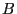
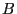

Next: C++ API Overview Up: Advanced simplex routines Previous: GRBBinvRowi
| int | GRBgetBasisHead ( | GRBmodel | *model, |
| int | *bhead ) |
Returns the indices of the variables that make up the current basis matrix.
Return value:
A non-zero return value indicates that a problem occurred while extracting the basis. Refer to the Error Code table for a list of possible return values. Details on the error can be obtained by calling GRBgeterrormsg.
Arguments:
model: The model. Note that the model must have a current optimal basis, as computed by GRBoptimize.
bhead: The constraint matrix columns that make up the
current basis. The result contains one entry per constraint in  .
If bhead[i]=j, then column i in the basis matrix  is
column j from the constraint matrix
.
If bhead[i]=j, then column i in the basis matrix  is
column j from the constraint matrix  . Note that the basis may
contain slack or articifial variables. If bhead[i] is
greater than or equal to cols (the number of columns in
. Note that the basis may
contain slack or articifial variables. If bhead[i] is
greater than or equal to cols (the number of columns in  ),
then the corresponding basis column is the articial or slack
variable from row bhead[i]-cols.
),
then the corresponding basis column is the articial or slack
variable from row bhead[i]-cols.